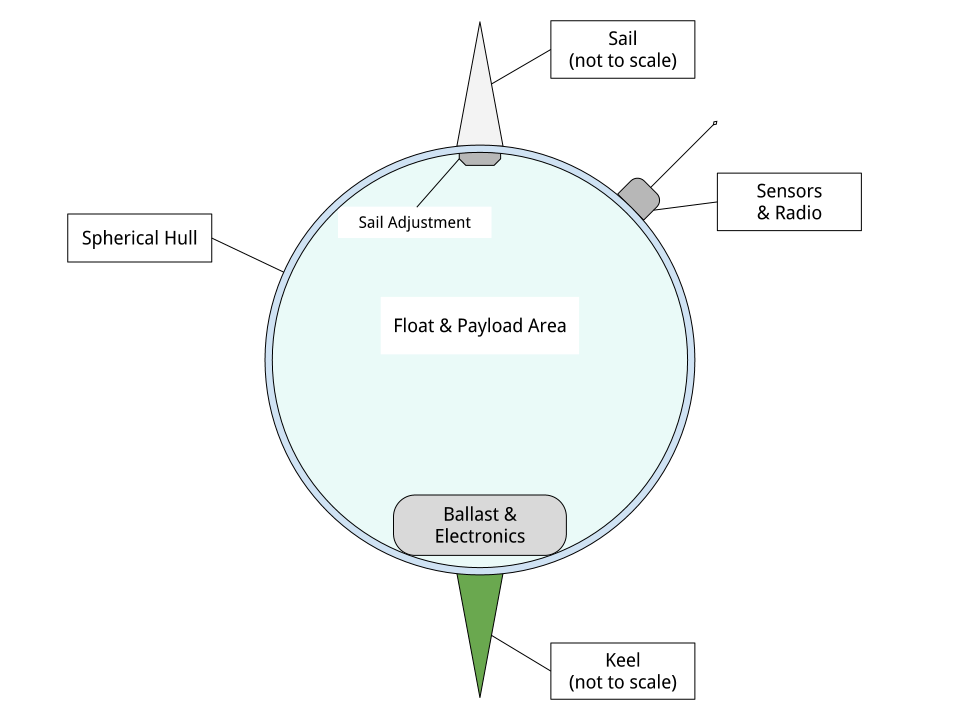

First of all, what are we talking about?
How do we make them? There are two areas to address:
(You can think of this as one three-dimensional structure if you permit the surface of the Earth to be treated as an approximately two-dimensional manifold and take time as the third dimension.)
First, because it's inspiring. You don't have to be a futurist or a science fiction fan to appreciate that. Flying buildings and flying small cities are just a cool idea.
Second, we're going to need to move a lot of people and material soon if climate change keeps up, and this provides a cheap carbon-neutral method.
Third, we can use them as launch platforms for space rockets.
Fourth...? I'm sure there are other things I'm not thinking of, like maybe people would just want to live up there? Scientific and military applications?
> In geometry, a geodesic is commonly a curve representing in some sense the shortest[a] path between two points in a surface ... It is a generalization of the notion of a "straight line" to a more general setting. ~ https://en.wikipedia.org/wiki/Geodesic
Here "Geodesic" refers to a class of structures that get their strength from their shape rather than the material they're made of. Typically they are spherical although other shapes are possible. (Suspension bridges could be thought of as geodesic structures.) They use minimal shapes for maximal efficiency.
"Tensgresity" refers to a structures made from a network of two kinds of parts: pure compression struts and pure tension ligaments or lines. The word is a portmanteau of "tensional integrity". These forms are extremely light and strong.
(All tensgresity structures are geodesic but not vice versa.)
"Cloud Nine": Huge geodesic spheres made of aluminum struts would float. Sunlight bouncing around inside would heat up the air inside, causing it to expand, displacing some air from the sphere. If the sphere is greater than 1/2 mile in diameter the amount of air displaced would weigh more than the sphere itself, and so it would float like a hot air balloon, even without a surface membrane. If you add a membrane it will float overnight.
"Octet truss": A specific kind of space-filling frame made of tetrahedrons (or, if you like of octahedrons.) I have a shoe box-sized chunk of this that I made from toothpicks and glue. It's really hard to understand how strong and light it is without making and handling examples.
(BTW, FWIW, Wikipedia is kinda a mess around this little eddy of subject matter. https://en.wikipedia.org/wiki/Octet_truss redirects to "Space frame", and that article says "Alexander Graham Bell from 1898 to 1908 developed space frames based on tetrahedral geometry." and links to "tetrahedral truss", but that just redirects to "Tetrahedral kite". All the "Space frame" article has to say about Bucky is, "Buckminster Fuller patented the octet truss in 1961 while focusing on architectural structures.")
Anyhow, the "octet truss" is a space-filling grid of octahedrons and tetrahedrons with a very high strength to mass ratio.
"...came about from his experiments with Hargrave's box kites and his attempts to build a kite that was scalable and big enough to carry both a man and a motor."
I read that critics of heavier-than-air flight were saying that it was impossible because the mass of a vehicle goes up as the cube of the length while the surface area only goes up with the square, and Bell wanted to show that that wasn't necessarily true.
By constructing a large kite by tessellation of many smaller kites the surface area to mass ratio stays constant as the size changes.
The Magnus effect is the deflection of the path of a spinning object moving through a fluid.
It "has some engineering uses, for instance in the design of rotor ships and Flettner aeroplanes." ~ https://en.wikipedia.org/wiki/Magnus_effect
This used to be more obscure but has recently become more widely know after some video of folks throwing basketballs off a dam went viral. Now there are lots of videos and folks making model aircraft, etc.
As it says in the Wikipedia entry:
> The lift on the cylinder per unit length, F/L, is the product of the velocity, v (in metres per second), the density of the fluid, ρ (in kg/m3), and the strength of the vortex that is established by the rotation, G...
Where G is:
G = 2πr²ω
where "ω is the angular velocity of spin of the cylinder (in radians / second) and r is the radius of the cylinder (in metres)."
The thing to notice is that the lift goes up with the second power of the radius of the rotor, so e.g., twice as large gets you four times as much lift!
This suggests that kites that rotate or have rotating parts could manipulate air pressure in useful ways. ;-)
Magenn (sic) wanted to manufacture tethered floating generators that used the Magnus effect to stay aloft and to generate power. The company went out of business or something.
There was a company in Australia that had a prototype of a Magnus effect vehicle that could do startling things. I don't want to describe it because I don't want to foster skepticism. If I can find videos I'll post them.
Tensairity - https://en.wikipedia.org/wiki/Tensairity The fundamental discovery is that reinforced balloons are incredible strong. Were talking as strong as steel at a fraction of the mass. Inflatable bridges, etc. This is a whole class of structures. The immediate obvious thing to do is use "tensairity" to make the compression struts of tensgresity structures. People are already doing experiments like: "An inflatable wing using the principle of Tensairity" https://repository.tudelft.nl/islandora/object/uuid:306785d0-f75b-4378-a145-75905c83efa7/?collection=research
See the Cellular Fractal structures subpage.
Consider the construction of a single tetrahedron "cell" (omitting the sail for now.) You need:
The struts are identical as are the connectors. The process (whatever it is) to attach the struts to the connectors is identical so the machinery to do it is identical.
So you only need two kinds of things (struts and connectors) and one kind of vertex assembly robot. You would arrange six strut dispensers so that they hold six struts at a time in a tetrahedral shape and arrange four vertex assembly robots to join them together simultaneously.
You would arrange 4n of those systems to produce four cells at once each cycle and feed sets of four cells at a time to another stage that connects their vertices to form a meta-tetrahedron. You can arrange 16n cell producers to produce 4n meta-tetrahedra and assemble those into meta-meta-tetrahedra, and so on... 64n cell producers can produce one meta-meta-meta-tetrahedra per construction cycle (Note that creating an n-meta takes no more extra time than the 1-meta, as all connector joining can happen in parallel.)
Now then, let's add sails and a drone's worth of chips, sensors, motors, and battery, and now each cell is a self-directed glider/kite. (It's not quite a kite if it's not tethered.)
(I want to say upfront that the tetrahedron might not be the best design for a self-directed kite form. I've explored triangular tensgresity prisms. The obvious thing to imitate is the maple seed. Cells can maintain rotation with minimal power to "idle" in space. The cellular fractal design pattern works for most practical forms.)
If the individual cells are self-directed robots that can fly and join formations immediately after construction then we don't actually have to have an additional factory to assemble them into meta-cells. They can just do it themselves.
This also has implications for allocation of capacity and self-repair. A damaged mega-lifter can simply split on transient "seams", eject the damaged sub-cells, and reform. The sub-cells themselves can repeat the process, etc., so that only the actually damaged struts and connectors need to be replaced. Everything else can be reused. (This reminds me of how "purely functional" data structures amortize cost of modifications.)
I also want to point out that I suspect that these structure will be amenable to Finite Element analysis, which is nice. Essentially they are just large grids, eh?
If all you wanted to do was make a really big kite you could do that, you would just need a lot of money. You could buy bamboo poles, strong lines, and some Tyvek housewrap and get to work. Above a certain ratio of surface area to mass it becomes difficult to keep a structure on the ground. Before long your biggest problem would be keeping the thing on the ground.
But it's not enough to "build it and they will come".
Can we make money with this? Is there a market for this kind of aerial transportation? A business model?
Can we at least explore the space without going broke?
I think I can sort of self-fund this thing, and do it in a way that lets me validate demand and all that at each stage. Without going on and on about it, here's my general drift:
These aren't meant to be hard divisions, more like an unfolding from smaller and simpler to bigger and more involved. Each stage lays the foundation for the next.
This project has two main intertwined strands, one involving correct software and the other cellular swarm robots for garbage collection.
The initial swarm will be ocean-going and work to clean up the Great Pacific Garbage Patch (and eventually other gyres) and then expand into terrestrial "litter-bots". There's also an aerial component, as well as a simple secure OS to run them. The software is coming along nicely and I'm working on the first prototypes.
The oceanic environment, although harsher physically, is semantically much simpler than the terrestrial environment so the challenges of programming a robot to deal with living in the ocean are much simpler than those of operation on land. Oceanic trash is mostly plastic and represents a trove of carbon atoms arranged in long-chain polymers. I know of at least two methods to recycle it into new, useful forms: Thermal Depolymerization (TDP) and Molten Salt Oxidation (MSO.) TPD converts plastic back into a crude liquid form (in other words, fuel) while MSO converts it into something called "synthesis gas" or syngas, which has a lot of industrial uses. Both TPD and MSO are exothermic reactions, and MSO can also be used with nuclear fuel to make safe atomic reactors. So, in theory, power is not a limiting factor.
The swarm will collect and reprocess waste into more litterbots. The self-replication will enable a small "seed" system to grow to cope with the amount of trash no matter how large. Once throughput of the trash collecting system is great enough to deal with existing and future trash flows, excess capacity can be repurposed or recycled.
Geodesic design and the Magnus effect permit aerial swarm robots that can combine in cellular forms (cf. Alexander G. Bell's cellular kites) to make large, permanently aloft structures, basically flying buildings, to enable mass transport for dealing with climate change, etc. If the surface-area-to-mass ratio is above a certain limit, the challenge is to keep things down, rather than to get them aloft. With intelligent control a "kite" can stay aloft 24/7 and there is effectively no upper limit to size (cf. Bucky Fuller's Cloud 9, "city in the sky".)
So that's one strand.
The other strand is a system of provably-correct software development that's easy enough for a non-programmer to use with minimal coaching. It's based on the work of Dr. Margaret Hamilton coming out of the Apollo 11 program. (The book "System Design from Provably-Correct Constructs" by James Martin is probably the best source on it.)
I'm combining that with a logical hardware model based on a notation called the "Laws of Form" (from a book of the same name by George Spencer-Brown), and with the Joy programming language (by Manfred von Thun), to enable me to write provably-correct systems "down to the metal" in a simple and self-contained codebase.
Putting it all together, I'm building a system that enables normal people to program computers easily with correct bug-free results, and use it to build a self-replicating robot swarm to collect and recycle the world's trash, enable mass transport of material and people, and provide power, fresh water, and structural materials globally.
This is a crude schematic of the basic design of a marine robot.

It's just a sphere with a keel and a sail and some electronics. It's only capability as such would be to navigate around the seas.
One of the very first extensions of this basic design would be allowing them to find and connect to each other to form filaments. If a net or curtain hung below a filament it could act as a collector of floating trash. Each member of the filament is mobile and together they could lasso trash for further processign by other parts of the system.
If they're fitted with ports these simple sphere-shaped bots can store and transport cargo inside the spheres.
Modifications to the basic sphere-shape are easy to imagine: fish, "needle" buoy, etc...
This is a crude schematic of the basic recycling "metabolism" for converting marine trash into biomass.
The four blue rectangles are the main processing plants (no pun intended).
MSO Reactor
This takes in trash, solar energy, and salt, and produces Syngas and residual elements.
Solar Still
This takes in solar energy and salt water, and produces fresh water and salt.
Water Column
This takes in syngas and fresh water, and produces hydrogen and carbon dioxide.
Greenhouse
This takes in solar energy, fresh water, and carbon dioxide, and produces biomass
Computers are a mapping between human intentions and automatic machinery.
Kinds of Computers:
(I'm mostly concerned with the first three, but there's no reason your music synth should be buggy.)
Basic recipe for correct, minimal code: LoF to describe hardware, Joy to orchestrate it, HOS to develop Joy, and Prolog to write new machine code.
In order to make trustworthy software you need to have trustworthy hardware, and for that you need to be able to prove, with symbolic logic, the behaviour of the circuits. A LoF expression is simultaneously a circuit schematic and a statement of binary Boolean logic.
If you're typing code into a text editor and hoping that it describes a correct program, you're doing it wrong.
By starting with a simple correct program and only modifying it by means of correctness-preserving operations we can develop software that is automatically proven-correct.
The demo UI kinda has a tiny bit of failure-proofing in that it shows you, when you hover the mouse over a command, whether or not it will work with the current stack. But writing new Joy functions is still totally by hand. HOS would seem to me to imply a system that lets the user author new commands by a process of differentiating some initial blank (or library) command by certain provably-correct operations only. In any event, the commands to "inscribe" new commands should guard against invalid programs. (Any [in]valid programs that the guard cannot recognize are of interest!)
Very recently I've learned of extensive work done towards provably correct compilation in Prolog. It seems like this is the way to go to get from Joy to the metal. Here are some of the papers I've found:
In no particular order.